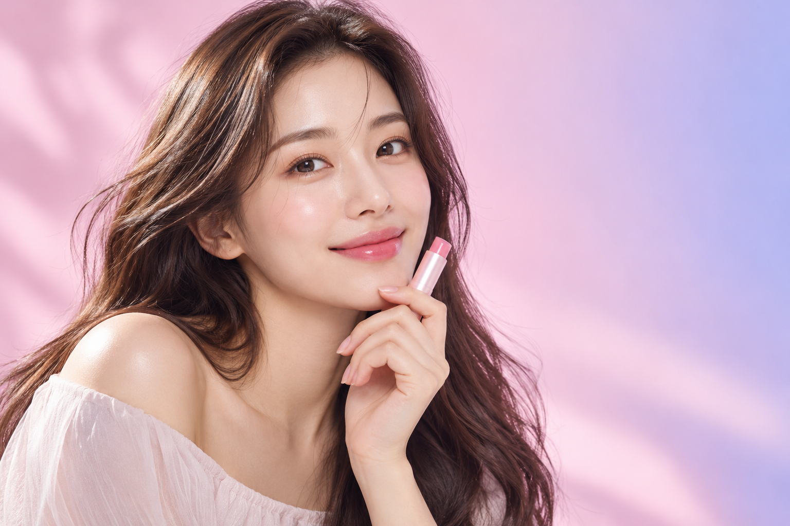

/ 컬러 스튜디오
나를 알아가는 작은 시작 m
YOUR LIPS, YOUR MOOD
오늘의 나에게, 어울리는 컬러.
입술 본연의 색에서 시작하는 나만의 립 컬러 여정
PERSONAL LIP COLOR STUDIO당신의 입술에
당신의 입술에
가장 나다운 색을.
본연의 입술 컬러와 톤을 살펴보고,
당신의 분위기에 꼭 맞는 립을 만나보세요.
◌ 사진은 내 기기에서만 안전하게 분석돼요

a little color,
a whole new mood.
a whole new mood.
MY NATURAL SHADERose beige #B97978
✦나의 립 컬러 분석
STEP 01 / 02가장 자연스러운 당신의 입술을 보여주세요.
↥
사진 한 장으로 시작해요
입술이 잘 보이는 사진을 올려주세요.
자연광에서 촬영한 사진이면 더 좋아요.
사진에서 입술 중앙을 눌러 분석할 색을 선택하세요.
사진이 준비되지 않았다면?
♧ 업로드한 사진은 서버에 저장되지 않아요.
나의 컬러 팔레트
미리보기분석 후 나만의 컬러 팔레트가 완성돼요.
YOUR SHADERose beige#B97978
✦은은한 장밋빛에 따뜻함 한 방울.
꾸미지 않은 듯, 자연스러운 나의 무드.
LIGHTYOUR MOOD PALETTEDEEP
CURATED FOR YOUR MOOD
내 입술 색과 비슷한 립 찾기
어떤 색과 비슷한 립을 찾을까요?
사진을 올리고 입술을 클릭한 다음 ‘선택한 컬러 분석하기’를 누르면, 아래에 비슷한 제품 4개가 표시돼요.
사진 없이 먼저 체험하고 싶어요 샘플 색으로 제품 찾기 ＋
① 찾고 싶은 색을 골라주세요
이 기능은 내 입술 분석이 아닌, 선택한 색과 비슷한 제품을 찾는 체험이에요.
선택한 색로즈 베이지 · #B97978
색을 고른 뒤 버튼을 누르면 추천 제품이 바뀝니다.
YOUR NEXT FAVORITE, DISCOVERED.
제품 컬러는 참고용이며 화면·조명·발색에 따라 달라질 수 있어요. 제품 예시색은 공식 측정값이 아닙니다. CIELAB 기반 ΔE(색 차이)가 작을수록 유사하며, 유사도는 색 비교 점수로 어울릴 확률이 아닙니다.